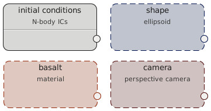

First simulation
Setup
Simulations in OpenSPH are set up using a node-based editor. To get familiar with the system, open up the the Presets category on the right-hand side of the editor and select a simulation by double-clicking it. Each node requires a set of inputs, it is necessary to connect the inputs in order to evalute it. For example, the SPH run node requires the particle data as its initial conditions and, if boundary conditions are enabled, also the shape definiting the computation domain. There are currently four types of nodes:
- Particle nodes create particles. They may run a simulation, set up initial conditions, load particles from file, etc. These are the most used nodes.
- Material nodes define a material. They are typically used as an input for initial conditions nodes.
- Geometry nodes represent some sort of shape. They can be used for define initial or boundary conditions or for other auxiliary operations.
- Camera nodes define a projection and are currently only used in the Render animation node.
Running the simulation
To start the simulation, you can:- Select Simulation ⇒ Start run from the application menu (shortcut Ctrl+R)
- Right-click a specific node and select Evaluate
There are two types of simulation - SPH and N-body. Both can be used for simulations of self-gravitating objects, they differ in particle interactions. SPH solves hydrodynamical equations to get physically correct behavior of fluids or solid bodies. N-body considers particles to be solid spheres and handles their collisions using either billiard-ball physics or by merging them into a larger particle.
For SPH simulations, it is useful to set Particle radius to about 0.3 in the simulation page. This only affects the visualization of particles. It reduces the particle overlap and makes the rendering window more responsive. However, keep the radius at 1 for N-body simulation to correctly show the physical radius of particles.
It is sometimes useful to set certain Cutoff distance. This will only render particles close to the z=0 plane, showing the interiors of the simulated objects.
Time step
The time step in the simulation is determined automatically, using the user-defined criteria. The current time step is displayed in the Run statistics panel, together with the criterion that limits the time step. There are several criteria, all of which are enabled by default. They can be set in the Time step criteria property of the simulation node. Generally, the Courant and Divergence criterion ensure the stability and should therefore always be enabled (although feel free to test what happens if you turn them off). Criteria Derivatives and Acceleration control the accuracy of the simulation. It is useful to disable them for quick tests, as they may considerably slow down the simulation, although they should remain enabled for 'serious' work. The time step is further limited by the Maximal timestep property, which might need to be increased for simulations of very large objects.